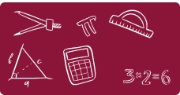
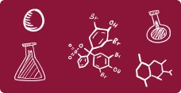

<div class="subjects-section">
  <div class="d-flex align-items-center justify-content-between">
    <div></div>
    <div class="sections-title">
      <h1>Subjects We <span>Teach</span></h1>
    </div>

    <button class="btn-wrapper">
      <div class="button-1">
        <p>View All</p>
        
      </div>
      <div class="button-2">
        <p>View All</p>
        
      </div>
    </button>
  </div>

  <!-- Swiper -->
  <div class="swiper-container-wrapper">
    <!-- Prev Button -->
    <div class="swiper-button-prev"></div>

    <!-- Swiper -->
    <div class="swiper mySwiperSubjects">
      <div class="swiper-wrapper">
        <!-- 1. -->
        <div class="swiper-slide slide-card">
          
          <p>Maths</p>
        </div>
        <div class="swiper-slide slide-card">
          
          <p>Physics</p>
        </div>
        <div class="swiper-slide slide-card">
          
          <p>Chemistry</p>
        </div>
        <div class="swiper-slide slide-card">
          
          <p>Biology</p>
        </div>
        <div class="swiper-slide slide-card">
          
          <p title="Computer Science">CS</p>
        </div>
        <div class="swiper-slide slide-card">
          
          <p>English</p>
        </div>

        <!-- 2. -->
        <div class="swiper-slide slide-card">
          
          <p>Maths</p>
        </div>
        <div class="swiper-slide slide-card">
          
          <p>Physics</p>
        </div>
      </div>

      <!-- Pagination (Dots) -->
      <div class="swiper-pagination"></div>
    </div>

    <!-- Next Button -->
    <div class="swiper-button-next"></div>
  </div>
</div>

<style>
  .subjects-section {
    padding: 80px 150px;
    background-color: #f9f7f4;

    @media (max-width: 1290px) {
      padding: 40px 60px;
    }
    @media (max-width: 1125px) {
      padding: 40px 30px;
    }

    @media (max-width: 764px) {
      padding: 40px 16px;
    }
  }

  .subjects-section .slide-card {
    border: 1.15px solid #8a15381a;
    border-radius: 10px;
    background-color: #fff3e1;
    display: grid;
    width: fit-content;
    text-align: center;
    padding: 12px;

    justify-content: center;
  }
  .subjects-section .slide-card img {
    width: 100%;
  }
  .subjects-section .slide-card p {
    font-weight: 500;
    font-size: 24px;
    line-height: 100%;
    letter-spacing: -2%;
    color: var(--primary-color);
    margin-top: 7px;
    text-wrap: nowrap;
  }

  .btn-wrapper {
    border: none;
    height: 50px;
    position: relative;
    background-color: transparent;
  }

  .button-1,
  .button-2 {
    padding: 13px 17px;
    text-wrap: nowrap;
    position: absolute;
    top: 50%;
    left: 0%;
    transform-origin: center;
    border-radius: 8px;
    color: #ffff;
    display: flex;
    gap: 6px;
    transition: transform 0.3s ease;
  }

  .button-1 {
    background-color: var(--secondary-color);
    transform: translate(-0%, -50%) rotate(2.66deg);
  }

  .button-2 {
    background-color: var(--primary-color);
    transform: translate(-0%, -50%) rotate(-2.66deg);
  }

  .btn-wrapper:hover .button-1,
  .btn-wrapper:hover .button-2 {
    transform: translate(-0%, -50%) rotate(0deg);
  }

  /* Swiper.js */
  .swiper-container-wrapper {
    position: relative;
    width: 100%;
    padding: 50px 0 0 0;
    box-sizing: border-box;
  }

  .mySwiperSubjects {
    width: 100%;
    padding-bottom: 40px;
    box-sizing: border-box;
  }

  .swiper-wrapper {
    align-items: center;
  }

  .swiper-slide {
    display: flex;

    justify-content: space-between;
    overflow: visible;
  }

  .swiper-button-next,
  .swiper-button-prev {
    position: absolute;
    top: 50%;
    transform: translateY(-50%);
    z-index: 10;
    font-size: 18px;
    cursor: pointer;
  }

  .swiper-button-prev {
    left: -50px;
    color: var(--primary-color);
    /* color: #8a153833; */
  }

  .swiper-button-next {
    right: -50px;
    color: var(--primary-color);
  }

  .swiper-pagination {
    position: absolute;
    bottom: 10px;
    width: 100%;
    text-align: center;

    display: flex;
    justify-content: center;
    align-items: center;
  }

  /* Style all bullets */
  .swiper-pagination-bullet {
    width: 10px;
    height: 10px;
    background-color: #8a153833;
    opacity: 1;
    transition: all 0.3s ease;
    margin: 0 4px;
    border-radius: 50%;
  }

  /* Style the active bullet */
  .swiper-pagination-bullet-active {
    background-color: var(--primary-color);
    width: 14px;
    height: 14px;
  }

  /* Swiper.js */
</style>

<script>
  var swiper = new Swiper(".mySwiperSubjects", {
    slidesPerView: 6,
    spaceBetween: 30,
    pagination: {
      el: ".swiper-pagination",
      clickable: true,
    },
    navigation: {
      nextEl: ".swiper-button-next",
      prevEl: ".swiper-button-prev",
    },
    breakpoints: {
      320: {
        slidesPerView: 2,
        spaceBetween: 10,
      },
      764: {
        slidesPerView: 5,
        spaceBetween: 30,
      },
      1080: {
        slidesPerView: 6,
        spaceBetween: 30,
      },
    },
  });
</script>
